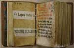
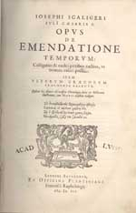
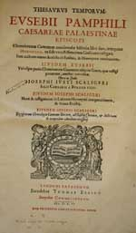

Adelaar in de wolken. De Leidse jaren van Josephus Justus Scaliger 1593-1609
Samenstelling: Paul G. Hoftijzer & Kasper van Ommen
Wetenschappelijk werk
| 3.1 | Josephus Justus Scaliger, Opus novum de emendatione temporum in VIII | ||
| libros tributum (Parijs: Sebastien Nivelle, 1583). UBL 769 A 50. | |||
|
|||
| 3.2 | Ethiopisch gebedenboek. Perkament, 71 ff. UBL 17, Or. 262 (Hebr. 123). | ||
| Dit handschrift bevat onder andere een tekst over de berekening van de kalender, die door Scaliger in facsimile is gepubliceerd in de eerste editie van zijn Opus novum de Emendatione temporum (1583). Aan het einde van het handschrift bevindt zich enige Arabische tekst, die echter onleesbaar is geworden. | |||
|  | |||
|
|
|||
| 3.3 | Josephus Justus Scaliger, Opus de emendatione temporum. Castigatius & | ||
| multis partibus auctius, vt nouum videri possit. Item vetervm Graecorvm fragmenta selecta, quibus loci aliquot obscurissimi chronologiae sacrae & bibliorum illustrantur, cum notis eiusdem Scaligeri (Leiden: Franciscus II Raphelengius, 1598). UBL 420 B 1. | |||
|  | |||
|
|
|||
| 3.4 | Franciscus I Raphelengius, anonieme kopergravure, 1613. 155 x 106 mm. Uit: | ||
| Johannes Meursius, Illustris Academia Lugd-Batava: id est Virorum Clarissimorum Icones, Elogia ac Vitae ... (Leiden: Andries Clouck, 1613). UBL 662 C 10. | |||
|
|
|||
| 3.5 | Marcus Manilius, Astronomicon a Ios. Scaligero ex vetusto codice | ||
| Gemblacensi infinitis mendis repurgatum. Eiusdem Iosephi Scaligeri notae ... (Leiden: Christophorus Raphelengius voor Joannes Commelin, 1599-1600). UBL 754 E 24 (met opdracht van Scaliger). | |||
|
|
|||
| 3.6 | Josephus Justus Scaliger, Thesaurus temporum (Leiden: Officina | ||
| Commeliniana, 1606). UBL 754 A 13. | |||
|  | |||
| vorige pagina | volgende pagina |